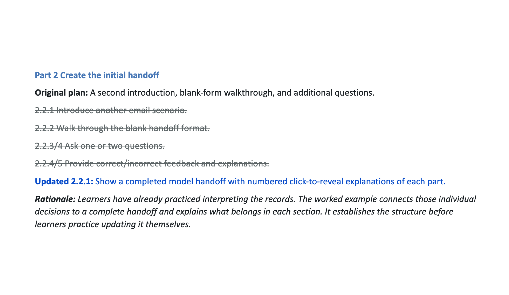
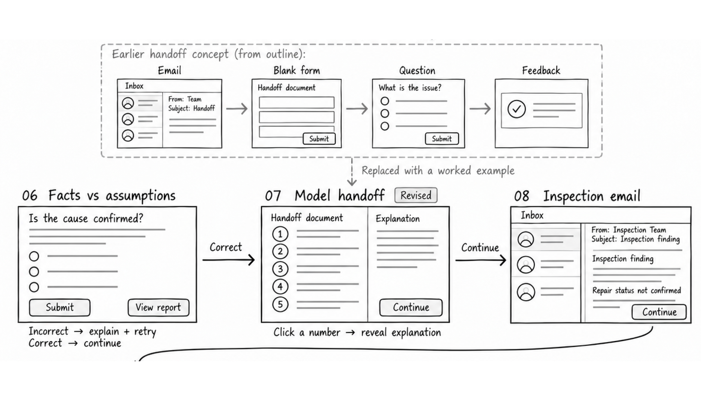

Make the handoff structure visible
Learners have identified supported facts and uncertain claims. Next, they need to see how those decisions fit into a complete maintenance handoff.
Original plan
Outline excerpt

Wireframe

Final interaction
What changed
I replaced another scenario, a blank-form walkthrough, and additional questions with a completed model handoff and five numbered click-to-reveal explanations.
Why
The worked example connects individual reporting decisions to a complete handoff, giving learners a reference before they practice updating it.